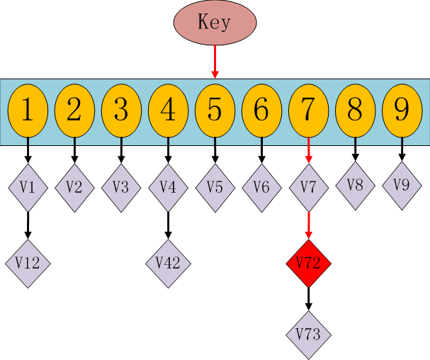
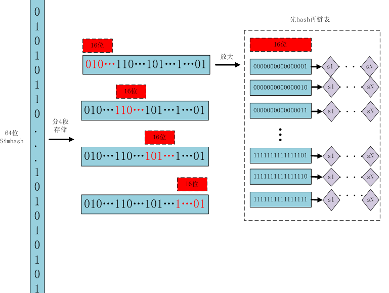
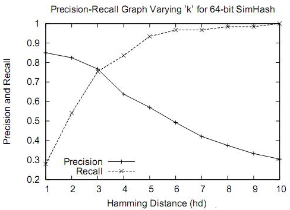

simhash是一种局部敏感hash。即，假定两个字符串具有一定的相似性，在hash之后，仍然能保持这种相似性，就称之为局部敏感hash。simhash被Google用来在海量文本中去重。
SimHash算法思想
假设我们有海量的文本数据，我们需要根据文本内容将它们进行去重。对于文本去重而言，目前有很多NLP相关的算法可以在很高精度上来解决，但是我们现在处理的是大数据维度上的文本去重，这就对算法的效率有着很高的要求。而局部敏感hash算法可以将原始的文本内容映射为数字（hash签名），而且较为相近的文本内容对应的hash签名也比较相近。SimHash算法是Google公司进行海量网页去重的高效算法，它通过将原始的文本映射为64位的二进制数字串，然后通过比较二进制数字串的差异进而来表示原始文本内容的差异。
SimHash流程实现
simhash是由 Charikar 在2002年提出来的，参考 《Similarity estimation techniques from rounding algorithms》 。 这个算法主要步骤如下：
- 分词：将Doc进行关键词抽取(其中包括分词和计算权重)，抽取出n个(关键词，权重)对， 即图中的多个
(feature, weight)。 记为feature_weight_pairs = [fw1, fw2 … fwn]，其中fwn = (feature_n,weight_n)。 - hash：对每个feature_weight_pairs中的
feature进行hash。 图中假设hash生成的位数bits_count = 6。 - 加权合并：然后对hash_weight_pairs进行位的纵向累加，如果该位是1，则
+weight,如果是0，则-weight，最后生成bits_count个数字，如图所示是[13, 108, -22, -5, -32, 55], 这里产生的值和hash函数所用的算法相关。 - sign：
[13,108,-22,-5,-32,55] -> 110001这个就很简单啦，正1负0。
现在通过这样的转换，我们把库里的文本都转换为simhash 代码，并转换为long类型存储，空间大大减少。
SimHash签名距离计算
使用海明距离（Hamming distance）就可以计算出两个simhash的相似度。两个simhash对应二进制（01串）取值不同的数量称为这两个simhash的海明距离。举例如下： 10101 和 00110 从第一位开始依次有第一位、第四、第五位不同，则海明距离为3。对于二进制字符串的a和b，海明距离为等于在a XOR b运算结果中1的个数（普遍算法）。
SimHash存储和索引
经过simhash映射以后，我们得到了每个文本内容对应的simhash签名，而且也确定了利用汉明距离来进行相似度的衡量。那剩下的工作就是两两计算我们得到的simhash签名的汉明距离了，这在理论上是完全没问题的，但是考虑到我们的数据是海量的这一特点，我们是否应该考虑使用一些更具效率的存储呢？其实SimHash算法输出的simhash签名可以为我们很好建立索引，从而大大减少索引的时间，那到底怎么实现呢？
我们使用的方法就是类似于hashmap的方案。在hashmap中我们要查找一个key值时，通过传入一个key就可以很快的返回一个value，hashmap的内部结构如下：

hashmap的运作原理：如果我们需要得到key对应的value，需要经过这些计算，传入key，计算key的hashcode，得到7的位置；发现7位置对应的value还有好几个，就通过链表查找，直到找到v72。其实通过这么分析，如果我们的hashcode设置的不够好，hashmap的效率也不见得高。
借鉴这个算法，来设计我们的simhash查找。通过顺序查找肯定是不行的，能否像hashmap一样先通过键值对的方式减少顺序比较的次数。看下图：

存储：
1、将一个64位的simhash code拆分成4个16位的二进制码。（图上红色的16位）
2、分别拿着4个16位二进制码查找当前对应位置上是否有元素。（放大后的16位）
3、对应位置没有元素，直接追加到链表上；对应位置有则直接追加到链表尾端。（图上的 S1 — SN）
查找：
1、将需要比较的simhash code拆分成4个16位的二进制码。
2、分别拿着4个16位二进制码每一个去查找simhash集合对应位置上是否有元素。
2、如果有元素，则把链表拿出来顺序查找比较，直到simhash小于一定大小的值，整个过程完成。
原理：
借鉴hashmap算法找出可以hash的key值，因为我们使用的simhash是局部敏感哈希，这个算法的特点是只要相似的字符串只有个别的位数是有差别变化。那这样我们可以推断两个相似的文本，至少有16位的simhash是一样的。具体选择16位、8位、4位，大家根据自己的数据测试选择，虽然比较的位数越小越精准，但是空间会变大。分为4个16位段的存储空间是单独simhash存储空间的4倍。之前算出5000w数据是 382 Mb，扩大4倍1.5G左右，还可以接受：）
通过这样计算，我们的simhash查找过程全部降到了1毫秒以下。就加了一个hash效果这么厉害？我们可以算一下，原来是5000w次顺序比较，现在是少了2的16次方比较，前面16位变成了hash查找。后面的顺序比较的个数是多少？ 2^16 = 65536， 5000w/65536 = 763 次。。。。实际最后链表比较的数据也才 763次！所以效率大大提高！
到目前第一点降到3.6毫秒、支持5000w数据相似度比较做完了。还有第二点同一时刻发出的文本如果重复也只能保留一条和短文本相识度比较怎么解决。其实上面的问题解决了，这两个就不是什么问题了。
- 之前的评估一直都是按照线性计算来估计的，就算有多线程提交相似度计算比较，我们提供相似度计算服务器也需要线性计算。比如同时客户端发送过来两条需要比较相似度的请求，在服务器这边都进行了一个排队处理，一个接着一个，第一个处理完了在处理第二个，等到第一个处理完了也就加入了simhash库。所以只要服务端加了队列，就不存在同时请求不能判断的情况。
- simhash如何处理短文本？换一种思路，simhash可以作为局部敏感哈希第一次计算缩小整个比较的范围，等到我们只有比较700多次比较时，就算使用我们之前精准度高计算很慢的编辑距离也可以搞定。当然如果觉得慢了，也可以使用余弦夹角等效率稍微高点的相似度算法。
适用情况
通过大量测试，simhash用于比较大文本，比如500字以上效果都还蛮好，距离小于3的基本都是相似，误判率也比较低。但是如果我们处理的是微博信息，最多也就140个字，使用simhash的效果并不那么理想。看如下图，在距离为3时是一个比较折中的点，在距离为10时效果已经很差了，不过我们测试短文本很多看起来相似的距离确实为10。如果使用距离为3，短文本大量重复信息不会被过滤，如果使用距离为10，长文本的错误率也非常高。

python 工具（Simhash）
安装
1 | pip install Simhash |
查看simhash值
1 | from simhash import Simhash |
计算两个simhash值距离
1 | hash1 = Simhash(u'I am very happy'.split()) |
SimhashIndex使用
1 | from simhash import Simhash, SimhashIndex |